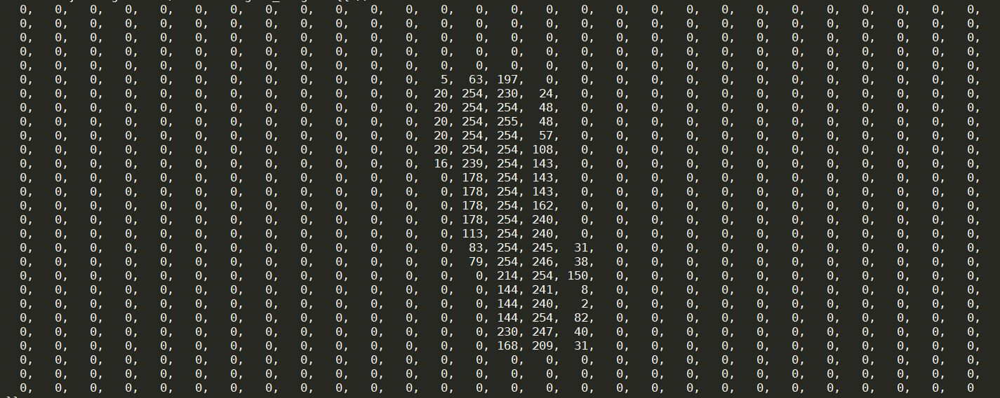
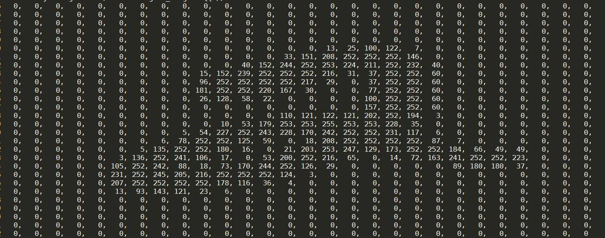

Section 9: PA 5 Walkthrough¶
The goal of this discussion section is to help you get started in PA 5. In this section, we will get familiar with some utility classes provided in the PA, and implement a brute-force version of the KNN algorithm (i.e., K is limited to 1) to find the nearest neighbor of a given point in a point dataset.
Before you start, let's source our setup script like this:
1 | % source setup-ece2400.sh
|
Now clone the github repo for this discussion section. No need to fork the repo, just clone it.
1 2 3 4 5 | % mkdir -p ${HOME}/ece2400 % cd ${HOME}/ece2400 % git clone git@github.com:cornell-ece2400/ece2400-sec9-pa5-walkthrough.git sec9 % cd sec9 % ls |
You will see the following files in the directory:
CMakeLists.txt: CMake build configuration filesrc/constants.h: header file declaring some necessary constantssrc/digits.dat: a small image datasetsrc/knn-brute-force.h: header file declaringknnfunctionsrc/knn-brute-force.cc: source file implementing theknnfunctionsrc/point.h: header file containing definition ofPointclasssrc/drawing.h: header file containing definition ofDrawingclasssrc/types.h: header file declaringImage,Label, andLabledImageclasssrc/types.ccandsrc/types.inl: source file implementingImage,Label, andLabledImageclass and some inline functionssrc/types-adhoc.cc: an ad-hoc program that uses classes declared insrc/types.htests/knn-test.cc: test program for theknnfunctiontests/utst.h: unit testing macros
1. Part 1: Getting familiar with Image, Label, and LabeledImage classes
Before you start this part, read section 2.1 in the PA 5's
handout
to understand: (1) the interface of Image, Label, and LabledImage
classes, (2) what they do, and (3) member functions that you will use in
the PA.
We provide some small activities in src/types-adhoc.cc for you to
practice using some member functions in the three classes. Instructions are
provided in the code.
After you complete each activity, you can run types-adhoc like this to
see results on your terminal:
1 2 3 4 5 | % cd ${HOME}/ece2400/sec9 % mkdir -p build % cd build % cmake .. % make run-types-adhoc |
2. Part 2: Brainstorming and implementing HandwritingRecSysClassifyOnes
Now let's start working on the first part of your PA. Read the section 2.3 in the PA's handout to understand what you are asked to implement for this part. Basically you will implement a system that can only classify images of ones. This system does not use any training dataset to do the classification, but uses an algorithmic approach instead.
Think about if you're given an image of an unlabeled handwritten digit. How
can you recognize if the digit is 1 or not? See the following figures of
digit 1 and 2 represented as 2-D arrays of pixel values. Discuss your
solutions with the rest of the class.


Now clone your group's repo like this:
1 2 3 | % cd ~/ece2400 % git clone git@github.com:cornell-ece2400/group_<group-id> % cd group_<group-id> |
Start implementing your algorithm in src/hrs-ones.cc.
3. Part 3: Implementing a KNN algorithm working with Point (take-home exercise)
In this part, we go back to the section 9's repository.
1 | % cd ~/ece2400/sec9
|
Before you start working on this part, read section 2.4 in the PA 5's handout to understand the following concepts:
- KNN algorithm
- Euclidean distance
- How to calculate the Euclidean distance between two points
Then, you will implement a simple KNN algorithm that takes a dataset of points and a target point, and returns the point nearest to the target point in the dataset. It's essentially the KNN algorithm with K equal to one.
A brute-force implementation of the KNN algorithm simply computes the distance between the target point and every single point in the dataset. It returns the point that is closest to the target point.
After you complete your implementation, add more tests in
tests/knn-test.cc. Look at the given test case. You will see that we use
Drawing class to draw points on the terminal so that you can visualize
where your points are in a 2-D space. Play around with this drawing
feature. It will become handy when you work on your PA 5.
You can run the test like this:
1 2 3 4 5 | % cd ${HOME}/ece2400/sec9 % mkdir -p build % cd build % cmake .. % make check-knn |